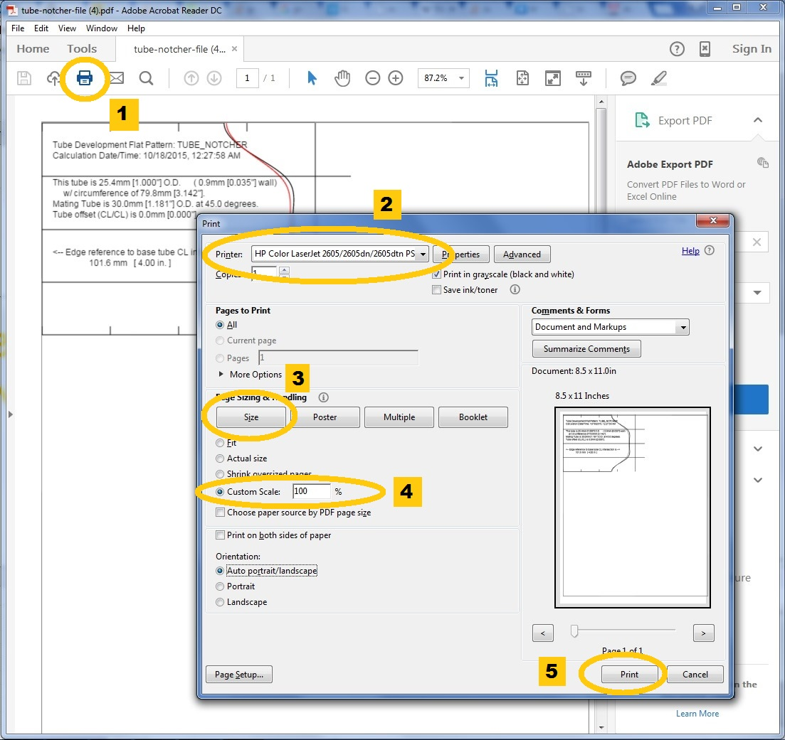

OVERVIEW:
-
The TubeNotcher Program is designed to make it easy to join two tubes together. This program, also called a Tube and Pipe Miter Calculator, generates a full scale paper template to assist in hand cutting and fitting an accurate joint. This is much cheaper than purchasing a fancy mill machine or tube notcher cutting fixture.
-
The program includes angular reference, as well as length reference (to tubing centerline intersection.) This can be a valuable tool to anyone making things out of tubing (Roll cages, off-road vehicle frames, bicycle frames, airplane frames, go-karts,
furniture, display cases, artwork, etc...)
-
The program includes allowances for the inner tube surface as well, based on tubing wall thickness input. Remember, you don't necessarily want to cut just to the outer tubing contact line.. If you are brazing the joint, you will probably want as much
surface contact area as possible. If you use a half round file, don't worry, it will make sense as you get close to the outer tubing skin pattern. Some folks who weld their joints cut to the inner diameter contact line. That enables tube to
tube solid contact, yet leave room for a bevel to aid in improved penetration for welding.
-
The TubeNotcher program includes angular reference lines at 0, 90, 180, 270 and 360 degrees to aid in rotational alignment.
-
In some cases of the decorative end treatments, the angular reference lines are rotated 45 degrees. This is to make things line up more naturally when there are an even number of cycles.
-
Additionally, the TubeNotcher program has measured tube length reference marks labeled on your printout. Where the tubing to tubing interface has no offset, the reference marks match tubing to tubing centerline intersection. You can transfer center to
center distance from your design drawings, directly parts. Its much easier to use the TubeNotcher's length reference line then it is to try and use a tape measure on the end of a tube with a notch already cut in it. (Where exactly do I hold
the tape? The end of the tube is cut at an angle and it's wavy!)
-
If the cut tube only partially intersects the base tube, or if there is a significant offset, or if the cut tube is smaller than the base tube, the drawings may have
some additional lines. Don't worry, this is normal. Just cut out the portion of the printout that looks like it should be cut out. Hopefully this is obvious (note: the
extra lines are generated because the math at that point is undefined.) Hopefully what you have is a paper pattern with a oblong elliptical shape cutout.
NOTES ON PRINTING -- USING ADOBE ACROBAT READER:
- This program creates Adobe Acrobat Portable Document Format (PDF) files.
- You can download the latest version of Adobe Acrobat Reader directly from Adobe.
- I've tested that program on a number of operating systems, and it will definitely print out images full size.
- If the image is larger then 8-1/2" x 11", you can still print it out. Adobe Acrobat includes tools to print out large images on multiple pages
- After clicking a PRINT button, a PDF file will be created on your browser, and sent to your Download folder.

- To print letter sheets full size, select your printer, then select Size, and then choose the Custom Scale (100%)
- For large plots (6" tubing joints!), select your printer, then select Poster. You can add cut marks and labels as appropriate
- Here's a tip to get everything lined up. Use a window as a see thru light board, that way you can align multiple pages perfectly. Tape the pages together with scotch tape.
- Heres a short tutorial on the process...
SUGGESTIONS:
-
Input your dimensions, printout a full size pattern. Cut the pattern out with a pair of scissors. Tape it to your tube. mark the cut lines with a Sharpie permanent marker. That way you don't have to worry about the paper template slipping. Cut / file
to the marked line. Perfect fit results!
-
Take a 2x4 piece of lumber, cut it into 3-1/2 inch lengths. Clamp two pieces together with a piece of 1/8" hardboard in the middle with four c-clamps. Obtain a forstener bit with the same outer diameter of the tubing you are working with. Using a drill
press, drill thru the center of this 'sandwich'. You now have a tubing block halves suitable for clamping round tubing securely in a vise. Much cheaper and probably more secure than using machinist V-blocks to hold round tubing.
-
Did you know that half round and rat tail round files in different lengths each have a different cut radius ? Generally, use a 14" half round file to cut a miter for a 1-3/8" tube, a 12" half round file to cut for a 1-1/4" tube, a 10" file to cut for
a 1-1/8" tube and a 8" half round file to cut a notch for a 1" tube. A 12" round file cuts a 3/8" diameter, 10" round file cuts a 5/16" diameter and a 8" round file cuts a notch for 1/4" diameter tube. (Idea courtesy of Walt at www.waltworks.com)
-
You can also cut tubing to rough length with a chop saw or band saw and then fit the notch with a grinder or flapper wheel setup.
SOFTWARE REFERENCES:
This is not the only TubeNotcher style program out there, but it does offer some enhancements over the others. Other programs that I am aware of include:
-
Giles Puckett's Tubemiter.exe ref: http://www.ozhpv.org.au/shed/files/tubemiter.exe This is a stand alone program that operates in DOS. I've used this program and its pretty useful. It did inspire me to take it a little bit further.
-
Dan Hopper's TUBEFIT ref: http://metalgeek.com/static/dan/
-
Hal Eckhart's Tube Coping Calculator http://metalgeek.com/static/cope.pcgi;
-
Kidfixit Github project: http://kidfixit.com/CopeTube/ and https://github.com/kfix/CopeTube
-
BlockLayer Calculators, Estimators, Template Generators Plans and Tools: http://www.blocklayer.com/pipe-notching.aspx
-
Of related interest is the Bicycle Forest BikeCad Program. (www.bikeforest.com) Bike Forest offers a limited use free online CAD system for those who want to evaluate bicycle designs. Photo of the TubeNotcher bicycle on the help screen courtesy of BikeForest.
-
I am also indebted to Steve Garro from Coconino Cycles (www.juniper-solutions.com/coconinocycles/. I first saw external sleeves used on bicycle frames as a reinforcement on Steve's blog. That inspired me to add the section on decorative tube end treatments.
He may not be the first person to use sleeves like that as reinforcements, but his are the first that I ever saw. Very impressive and inspirational guy. Thanks Steve!